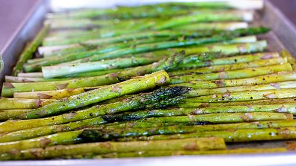

Oven Roasted Asparagus

Description
A simple oven roasted asparagus recipe, great and easy for
meal prep and pairs well with the oven baked trout.
Ingredients
- 1 bunch of asparagus spears
- 3 tbsp olive oil
- 1 1/2 tbsp parmesan cheese (optional)
- 1 clove of garlic, minced
- 1 tsp salt
- 1/2 tsp ground black pepper
- 1 tbsp lemon juice
Steps
- Preheat oven to 400 degrees Celsius.
- Cut off hard end of asparagus, cut asparagus into desired lengths.
- In a large mixing bowl, toss asparagus in olive oil until evenly covered.
- Add seasonings and toss until evenly coated.
- Spread evenly on baking sheet(s) and bake for 15 minutes.
- Asparagus should be tender. Take out and serve.